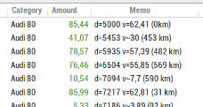

Step 1: Create the vehicles categories
Create some categories for each of your vehicle. You can use categories or subcategories as well. Optionally you can set the default vehicle for the vehicle-cost report window from the wallet dialog.

For example, create an 'Audi 80' category:
Step 2: Fill some transaction with vehicle-cost data's
Modify or add some transaction with necessary data's for the vehicle cost to work:
- assign the category 'Audi 80' to every transaction for this vehicle, this includes refuel, maintenance, repair, insurance, or any others costs.
- add the specific vehicle cost data's into each refuel memo field transaction, as follow. The memo field can also contains other texts as well.

Step 3: View the results into the vehicle cost report
Open the vehicle cost report, select 'Audi 80' Vehicle and view the results.